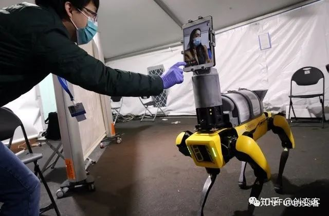

Picture source | Boston Dynamics
The first hero came from Boston Dynamics. During the outbreak, researchers, engineers and doctors from Boston worked together to develop a robot dog called spot, which helps medical staff in high-risk areas communicate with patients remotely via iPad. At present, robot dogs have been put into use in the birgham and women's Hospital of Harvard University. The biggest advantage of robot dog is to reduce the direct contact between medical staff and patients, so as to avoid cross infection. At the same time, it also puts forward a new idea for telemedicine.
Picture source | Diligent Robotics
The second hero is the Moxi robot developed by the diligent robotics team in Texas, USA. Its main function is to assist medical staff in drug collection and classification management, linen cloth replacement and other repetitive matters, so as to reduce the work pressure and air exposure of medical staff. With the continuous growth of the number of new crown pathology around the world, Moxi has already joined the front-line anti epidemic army. Recently, the team announced that the project has obtained a total of US $10 million financing from six leading companies including DNX capital to expand the manufacturing scale.
Picture source | XAG
The next soldier is from China's XeF technology XAG. In the early stage of the outbreak of the epidemic in China, R80, which was originally located in agricultural spraying, was temporarily armed as a "disinfection guard" to disinfect the designated field under the control of professionals, so as to reduce the cross infection caused by touching. According to the data, by the beginning of March 2020, XAG had 370 teams operating more than 2600 "disinfection guards" to participate in the anti epidemic campaign, covering an area of nearly 9.02 million square kilometers in 20 provinces of China. According to the team from XAG, "the risk of infection caused by skin exposure can be greatly reduced by machine control, and specific areas can be deeply disinfected, which is an advantage over manual disinfection."